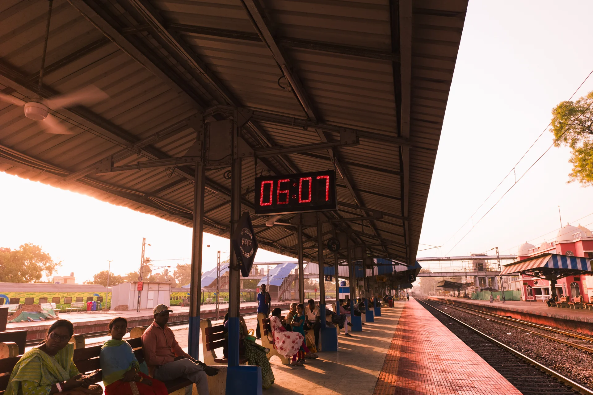

Natural light portrait

Night street reflectionsNight street reflectionsNight street reflectionsNight street reflectionsNight street reflectionsNight street reflectionsNight street reflectionsNight street reflectionsNight street reflectionsNight street reflectionsNight street reflectionsNight street reflectionsNight street reflectionsNight street reflectionsNight street reflectionsNight street reflectionsNight street reflectionsNight street reflectionsNight street reflectionsNight street reflectionsNight street reflectionsNight street reflectionsNight street reflectionsNight street reflectionsNight street reflectionsNight street reflections